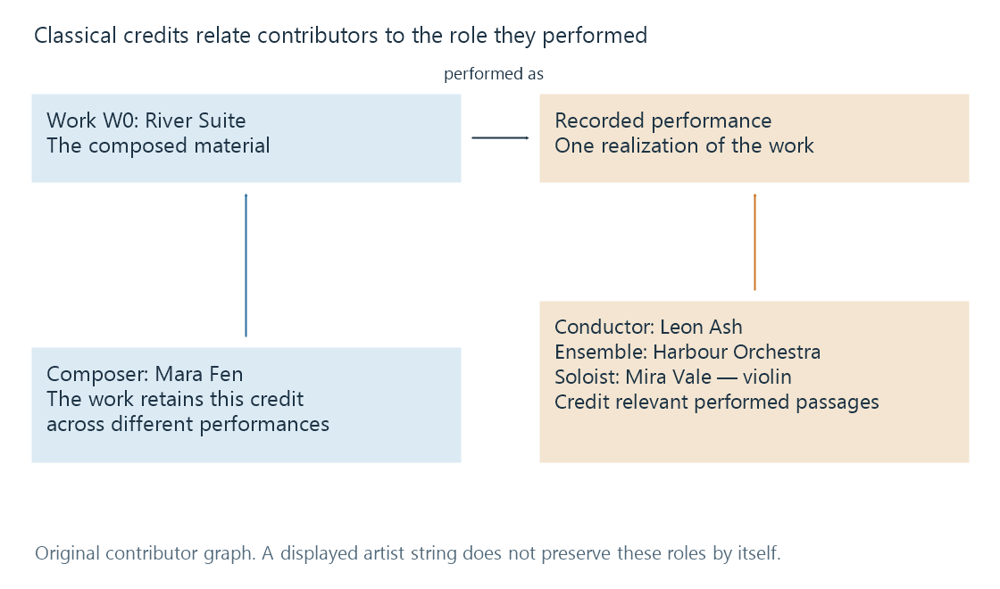

Classical music credits
Classical music credits preserve the distinct roles of composer, conductor, ensemble, soloist and other contributors at work, recording and release scopes.
A classical recording can involve a composer who wrote the work, a conductor who led the performance, an ensemble, several soloists and an arranger. The album cover may print all their names together. A useful library preserves what each person or group did.
Putting every name into one artist field can display the names while losing the relationships that make them meaningful.
One performance, several roles
Consider an entirely fictional recording of Mara Fen's River Suite:
| Contributor | Role | Scope of the credit |
|---|---|---|
| Mara Fen | Composer | The musical work |
| Leon Ash | Conductor | This recorded performance |
| Harbour Orchestra | Ensemble | This recorded performance |
| Mira Vale | Soloist, violin | The relevant performed passages |
| Ivo Reed | Arranger | The represented arrangement of the work |

Mara Fen remains the composer when another orchestra records the suite. Leon Ash's conducting credit belongs to this performance, not to every realization of the work. Mira Vale may perform in only one movement, so copying her soloist credit indiscriminately to every track can misdescribe the recording.
A conductor and an orchestra are also separate identities. Joining them into “Leon Ash and Harbour Orchestra” as a synthetic single artist would make it difficult to find other performances by the same orchestra under another conductor.
Work titles can contain a hierarchy
The suite contains two movements, Arrival and Night Crossing. A display title such as River Suite: II. Night Crossing combines the larger work and movement label.
A richer model can retain the movement as a work related to the suite. That supports questions like “Which recordings of Night Crossing do I have?” without relying on identical punctuation in every track title.
The movement number is a position within the work. It is not necessarily the release track number. A release containing another work first could place movement II at track 5, and a single track could contain both movements.
Similarly, a catalogue or opus number identifies work context. It does not locate a file or select the performing ensemble. Titles, work identifiers and recording identities need their own scopes.
Artist is interpreted by a catalogue convention
There is no single classical artist string that answers all of these questions:
- Who composed the music?
- Which orchestra performs it?
- Who conducts?
- Which soloist is featured?
- How is the issued album credited?
MusicBrainz's classical track-artist guideline uses the composer for the track artist, while performer relationships carry the performance detail. Other tagging and presentation workflows may prefer a performer-led artist display. Reading Artist as “the audible performer” without knowing the convention can therefore produce the wrong conclusion.
This is not resolved by declaring one role irrelevant. The library needs both the work's creators and the recording's performers. A presentation can emphasize one role while retaining the others as structured fields or relationships.
Tags offer several role fields
Picard's mappings include separate composer and conductor fields as well as artist and album artist. ID3v2.4 also defines structured musician and involved-person credit frames, alongside simpler text fields.
| Information to retain | Why a generic artist list is insufficient |
|---|---|
| Composer identity | The composition survives changes of performer |
| Conductor identity | The role differs from instrument performance |
| Ensemble identity | The group may recur with different conductors |
| Soloist and instrument | Several people can have different performing roles |
| Arrangement | A version of the work can use another contributor's treatment |
| Album-level credit | Describes the issued product's presentation |
The reader must actually understand those fields for them to affect a particular interface. A tag's presence and a browsing facet's availability are different parts of the workflow.
In Emby's tag-based music organisation, stable album fields help keep a release together. That album grouping should not force every movement's detailed credits to become identical. An album of several composers can share one album context while retaining each work's own composer field.
Preserve a credit before simplifying its display
A compact label such as Fen / Ash / Harbour Orchestra can work on a small screen if the underlying fields retain their roles. The same string is poor exchange data when no one can determine which name belongs to which role.
The work's original title and a translated display title present another boundary. Changing the visible language should not create a new composer or performance identity. Multi-valued metadata explains the corresponding distinction between a readable list and separately identified contributors.
For the River Suite example, a composer query should relate both movements to Mara Fen; a conductor query should select Leon Ash's performance; a violin-soloist query should retain the passages credited to Mira Vale. These are three different routes through the same catalogue, made possible by retaining the roles instead of only the names.
See Also
- Musical works and compositions
- Music recordings and track occurrences
- Album artists and track artists
- Cast and crew credits
- Multi-valued metadata fields